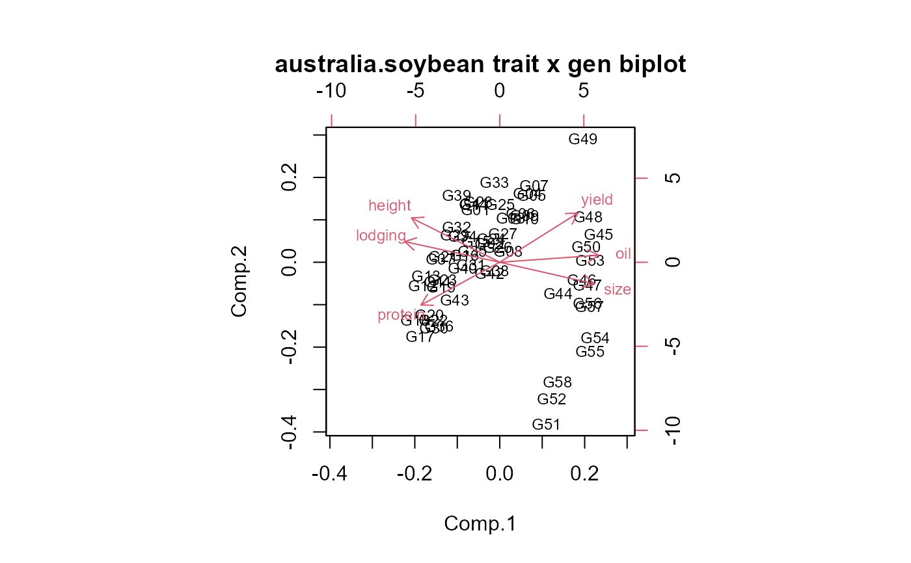
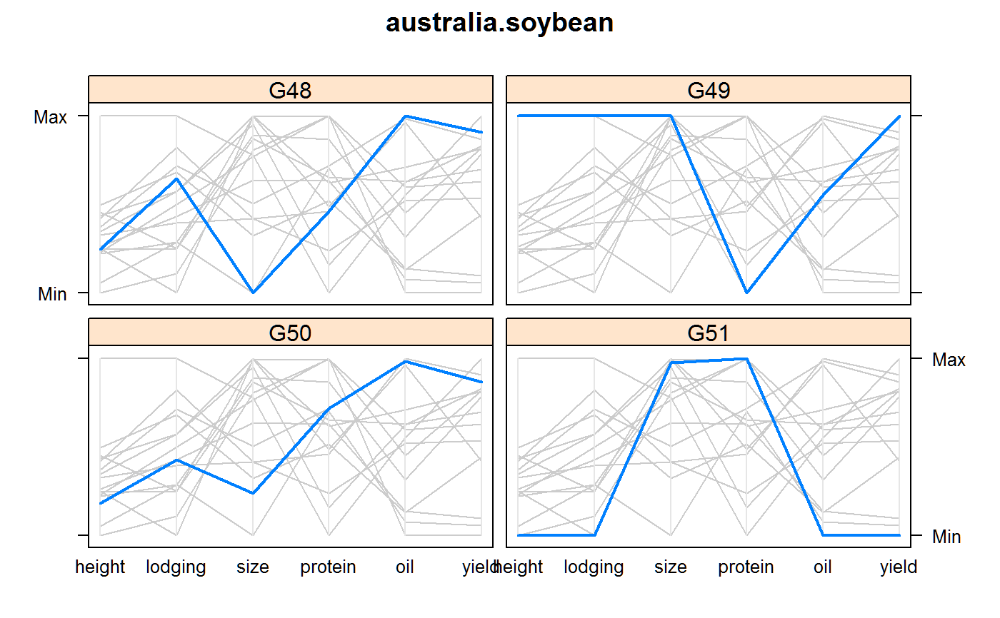

australia.soybean.RdYield and other traits of 58 varieties of soybeans, grown in four locations across two years in Australia. This is four-way data of Year x Loc x Gen x Trait.
A data frame with 464 observations on the following 10 variables.
envenvironment, 8 levels, first character of location and last two characters of year
loclocation
yearyear
gengenotype of soybeans, 1-58
yieldyield, metric tons / hectare
heightheight (meters)
lodginglodging
sizeseed size, (millimeters)
proteinprotein (percentage)
oiloil (percentage)
Measurement are available from four locations in Queensland, Australia in two consecutive years 1970, 1971.
The 58 different genotypes of soybeans consisted of 43 lines (40 local Australian selections from a cross, their two parents, and one other which was used a parent in earlier trials) and 15 other lines of which 12 were from the US.
Lines 1-40 were local Australian selections from Mamloxi (CPI 172) and Avoyelles (CPI 15939).
| No. | Line |
| 1-40 | Local selections |
| 41 | Avoyelles (CPI 15939) Tanzania |
| 42 | Hernon 49 (CPI 15948) Tanzania |
| 43 | Mamloxi (CPI 172) Nigeria |
| 44 | Dorman USA |
| 45 | Hampton USA |
| 46 | Hill USA |
| 47 | Jackson USA |
| 48 | Leslie USA |
| 49 | Semstar Australia |
| 50 | Wills USA |
| 51 | C26673 Morocco |
| 52 | C26671 Morocco |
| 53 | Bragg USA |
| 54 | Delmar USA |
| 55 | Lee USA |
| 56 | Hood USA |
| 57 | Ogden USA |
| 58 | Wayne USA |
Note on the data in Basford and Tukey book. The values for line 58 for Nambour 1970 and Redland Bay 1971 are incorrectly listed on page 477 as 20.490 and 15.070. They should be 17.350 and 13.000, respectively. In the data set made available here, these values have been corrected.
Basford, K. E., and Tukey, J. W. (1999). Graphical analysis of multiresponse data illustrated with a plant breeding trial. Chapman and Hall/CRC.
Retrieved from: http://three-mode.leidenuniv.nl/data/soybeaninf.htm
Used with permission of Kaye Basford, Pieter Kroonenberg.
K E Basford. 1982. The Use of Multidimensional Scaling in Analysing Multi-Attribute Genotype Response Across Environments, Aust J Agric Res, 33, 473--480.
Kroonenberg, P. M., & Basford, K. E. B. (1989). An investigation of multi-attribute genotype response across environments using three-mode principal component analysis. Euphytica, 44, 109--123.
Marcin Kozak (2010). Use of parallel coordinate plots in multi-response selection of interesting genotypes. Communications in Biometry and Crop Science, 5, 83-95.
library(agridat) data(australia.soybean) dat <- australia.soybean libs(reshape2) dm <- melt(dat, id.var=c('env', 'year','loc','gen')) # Joint plot of genotypes & traits. Similar to Figure 1 of Kroonenberg 1989 dmat <- acast(dm, gen~variable, fun=mean) dmat <- scale(dmat) biplot(princomp(dmat), main="australia.soybean trait x gen biplot", cex=.75)#>data(australia.soybean) dat <- australia.soybean dat <- melt(dat, id.var=c('env', 'year','loc','gen')) dat <- acast(dat, gen~variable, fun=mean) dat <- scale(dat) dat <- as.data.frame(dat)[,c(2:6,1)] dat$gen <- rownames(dat) # data for the graphic by Kozak dat2 <- dat[44:58,] dat3 <- subset(dat2, is.element(gen, c("G48","G49","G50","G51"))) parallelplot( ~ dat3[,1:6]|dat3$gen, main="australia.soybean", as.table=TRUE, horiz=FALSE) + parallelplot( ~ dat2[,1:6], horiz=FALSE, col="gray80") + parallelplot( ~ dat3[,1:6]|dat3$gen, as.table=TRUE, horiz=FALSE, lwd=2)